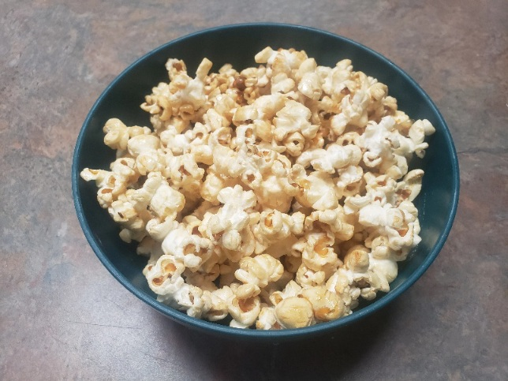

Kettle Corn Recipe

Kettle corn is a sweet variety of popcorn that is typically mixed or seasoned with a light-colored refined sugar, salt, and oil. It was traditionally made in cast iron kettles, hence the name, but in modern times other types of pots and pans are used.
Ingredients
- 2 tablespoons vegetable oil, or oil of your choice
- 1/4 cup of popcorn kernels
- 2 tablespoons of sugar (brown sugar works too)
- salt to taste
Directions
- Add oil into your saucepan and 3 popcorn kernels
- Cover with lid and set stove to medium-high heat
- Once all 3 kernels pop, add in the rest of your kernels and shake to coat in oil. Pour sugar directly onto the kernels
- Shake the pot for 3 seconds, rest for 3 seconds, and repeat till the kernels start to pop steadily. Depending on your stove, you may need to lift the pot to shake.
- Important Once you no longer hear pops for about 3 seconds, immediately transfer into a bowl to avoid burning.
Back to Home